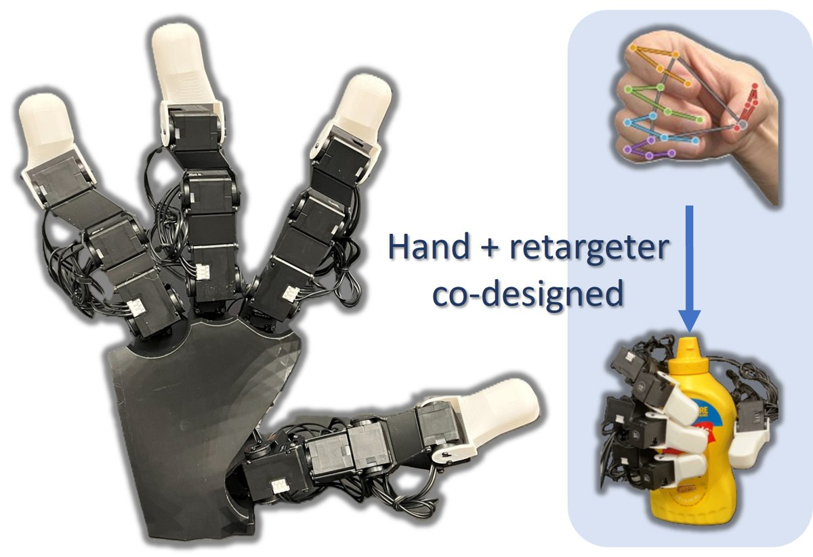

PACT: Posture-Aligned Co-Design Technique for Hand Configuration and Retargeting in Multi-Finger Imitation Learning
arXiv preprint arXiv:2610.18443, 2026. Submitted to IEEE ICRA 2027.
arXiv プレプリント arXiv:2610.18443、2026年。IEEE ICRA 2027 に投稿中。
A 17-servo robot hand and its posture retargeter are optimized jointly on human grasping postures. The fabricated hand tracks human keypoints with 3.9 mm RMSE (12.8 mm for the LEAP Hand baseline), lifts 2 kg under matched torque limits (1 kg), and grasps 86% of YCB objects (64%).
17サーボのロボットハンドと姿勢リターゲティング則を、人の把持姿勢に対して同時に最適化します。製作したハンドは人のキーポイントを誤差 3.9 mm で追従し（LEAP Hand は 12.8 mm）、同じトルク上限で 2 kg を持ち上げ（同 1 kg）、YCB 物体の 86% を把持しました（同 64%）。
@misc{sasazaki2026pact,
title = {{PACT}: Posture-Aligned Co-Design Technique for Hand Configuration and Retargeting in Multi-Finger Imitation Learning},
author = {Sasazaki, Koyo and Funabashi, Satoshi and Ponnivalavan, Pranav and Schmitz, Alexander and Ogata, Tetsuya and Sugano, Shigeki},
year = {2026},
eprint = {2610.18443},
archivePrefix = {arXiv},
primaryClass = {cs.RO}
}